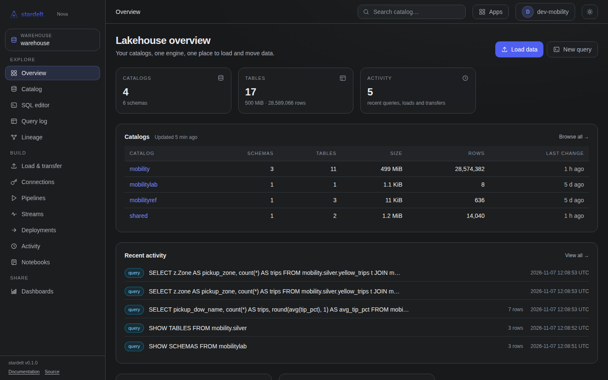

stardelt
Deck title
One sentence on what the audience leaves with.
02
Section title
One claim per slide.
The sentence that proves it.
Three parts of one idea.
First
Location
Where the data and the engines run.
Second
Control
Who operates it and who can stop it.
Third
Portability
Whether you can leave, and how fast.
Four steps, in order.
Try
Install on one node and load a file.
Pilot
One team, its own catalogs and sign-in.
Grow
More teams, dev and prod stages.
Run
Everything moves through Git.
1
front door for every person and tool
A quote, at most two lines.
— Who said it
One interface over open engines.
- One sign-in for every engine.
- Permissions by team, in one place.
- Tables any Iceberg engine can read.

How stardelt works.
The same table, in Python.
import stardelt
from transforms import daily_totals
daily = stardelt.sql("select day, amount from mobility.bronze.trips")
daily_totals(daily).head()
stardelt.publish("daily_trips.ipynb")